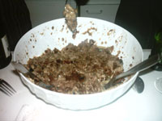

Organic acid
Sometimes it’s hard to tell what “organic” is supposed to mean. Like when Slate’s Emily Bazelon uses it in the hippie sense ten times and then abruptly in the scientific sense:
To [kill E. coli in spinach], you need to heat the leaves and treat them with an organic acid, which would probably make them go limp.”

Here, she means “an organic compound with acidic properties,” but I’m not sure how we’re supposed to know when organophones are talking about carbon compounds and when they’re waxing philosophic.
I love Emily Bazelon, normally. She makes my Friday with her charming participation in the Slate Gabfest (which, honestly, has no good page to link to). But her whiny little spinach piece is killing my crush.
It’s full of organic mythology, and even a rueful ode to packaged greens (which MrLittlePants and I hate more than we hate Osama). Apparently she’s one of those parents who think that occasionally feeding children unfashionable foods will ruin them for life.
That’s annoying, but even worse is her odd assumption that eating local is a solution to contaminated produce. She must not think much of Californians. (Hey, I don’t either, but I’m not sure they should be forced to graze the feces-laden spinach fields of Salinas Valley.)
And the best part:
I also wish for: a grocery store, within a 10-minute drive of my house … that sells local produce whenever possible and tells me where the rest of the fruit and vegetables come from so I can decide when to break the eat-local rule.
Give all your family’s money to your neighbors, along with your self-righteousness, and that might happen.
This store would forgo silly luxuries like tasteless strawberries in January. It would sell the staples I need for my kids’ school lunches (soy butter, whole-wheat bread, granola bars, and those kid-sized yogurt containers).
Are you kidding me, Emily Bazelon? Winter strawberries are “silly luxuries” but soy butter—whatever the hell that is—and kid-sized plastic yogurt containers are not? You’re destroying the world with your wildly unnecessary daily disposal of yogurt containers and you dare to condemn interstate transportation of produce?
It would favor free-range meat and poultry and eggs. Oh, and be home to a great bakery, too.
Oh really? Well you know what—I don’t even like you anymore.
Add a comment